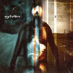

| Artist: | Sylvan |
| Title: | X-rayed |
| Label: | self produced |
| Length(s): | 68 minutes |
| Year(s) of release: | 2004 |
| Month of review: | [12/2004] |
| 1) | So Easy | 8.19 |
| 2) | So Much More | 3.07 |
| 3) | Lost | 7.16 |
| 4) | You Are | 5.30 |
| 5) | Fearless | 9.11 |
| 6) | Belated Gift | 4.07 |
| 7) | Today | 3.10 |
| 8) | Through My Eyes | 6.50 |
| 9) | Given - Used - Forgotten | 12.55 |
| 10) | This World Is Not For Me | 8.20 |
So Much More is more of a sad ballad like track with atmospheric guitars in the back. It is also much shorter, soon giving way to the heavy rhythm guitars of Lost. Again a very strong chorus, and again they flirt with the style of a band such as Linkin Park. This has to do with the voice, but also the very emotional performance. In between, the music is quite close to progmetal with some excellent melodic passages on keyboards. There is the for prog typical meandering about in this track, but the band doesn't take it too far. An excellent song.
With You Are we come again to more relaxed waters. This is quite a catchy pop song, with elements of the modern Marillion, both in Rothery's atmospheric side and also the approach to the vocals. Fearless opens with groovy bass, and the vocals warrant a reference to Red Hot Chili Peppers. In between these more relaxed funky passages, the music becomes more aggressive. The chorus is similar to that of the opener: emotional and loud. Halfway we take a turn for the atmospheric and slightly experimental. Slowly the song gets underway again with vague vocals between the slow drum beats. A dark Floydian feel evolves while the vocals from the first part return, but a bit more in the background. The final passage is dominated by a wailing guitar solo.
Belated Gift is another one of the shorter tracks. The style is more percussive here, less melodic. The chorus is one of the type we have now come to expect. Using this style of chorus a lot does not help to distinguish the songs. Today is even shorter, a hazy ballad with atmospheric guitar playing, similar to Pineapple Thief. Very emotional, this is a veritable tearjerker (in the good sense).
As Through My Eyes opens with some lo-fi drum 'n' bass, the hich-pitched, softly manic vocals of Gluehmann promise to soon erupt into something heavy. The dynamics of this song are, on this album at least, typical for Sylvan, including the mellow and moody intermezzo
The longest track on this album, Given - Used - Forgotten opens intimately with hazy vocals, and piano. A clear guitar solo sets in then, this being more what people would call typical symphonic rock. This is indeed one of the most symphonic and varied tracks, especially when you take into account the Hackett like excursions. It is also striking that it deviates the most from the other tracks, in that it does not follow the same format. Strangely, it is also has the strongest extremes from very heavy rhythm guitars to etheric vocals. The final minutes are for the guitaristic finale, which absolutely shines. One might why we still go on, after such a conclusion. But there is still This World Is Not For Me. This is a soft voiced vocal track, in which even the vocal chorus stays rather subdued. Again, the guitar plays the leading role as it sounds us out.